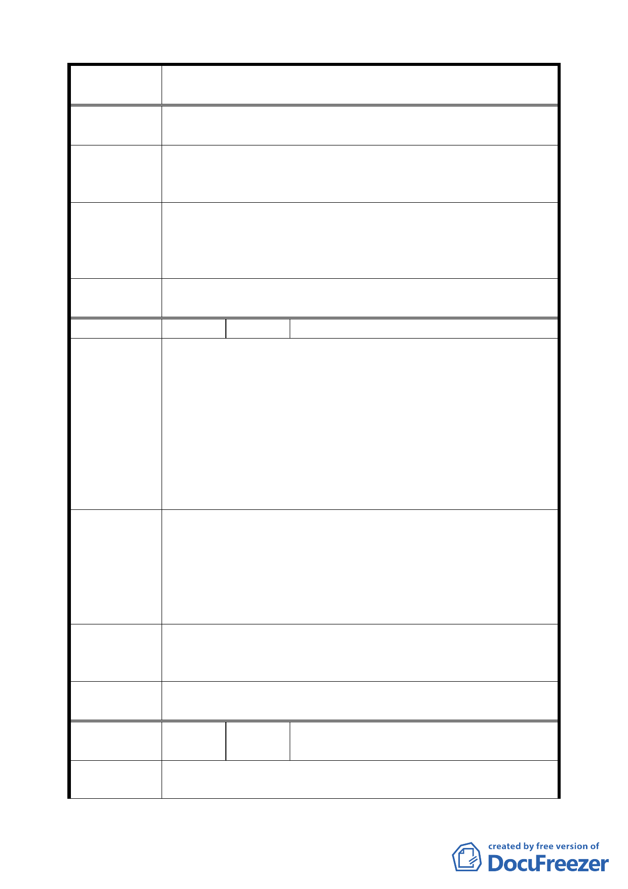

案 名 臺北市文山區都市計畫通盤檢討（主要計畫）案
三、對政府及市民百利而無一害，為何一再阻撓？
將羅斯福路五段兩側，及萬盛及萬年里範圍內之臨八線馬路
建 議 辦 法 住宅區改為商業區，與四段台大公館商圈連成一線，向南發
展。
專案小組
審查結論
目前水源快速道路已通車，本地區具有商業發展條件，沿羅
斯福路兩側（基隆路至景興路間）第一街廓進深 30 公尺範
圍，比照臺北市主要計畫商業區通盤檢討案變更為第三種商
( 9 4 . 7 . 4 ) 業區（特）。
委員會議
決議
依專案小組審查結論辦理。
編 號 ５ 陳情人 林榮顯（09430106600）
建議位置：興安段三小段 20、27、28 地號及其他景美 28 號
公園用地。
建議理由：
陳情理由
（主興 2）
一、上述所有土地市府畫為綠地逾 20 年，一秉安善良民守法
至今，未曾違法使用，現驟然變更為保護區，顯有違政
府信賴原則，影響人民權益至鉅。
二、已多次陳情儘速辦理徵收，市府以財政困難為由拒絕，
視人民權益於無物。政策改變，解救市庫財源問題，而
罔顧人民財產損失，公理安在？
一、依政府信賴原則，維持原計畫----綠地（即文山區景美 28
號公園計畫）。
建議辦法
二、若市府財源短絀，可循 1.BOT 方式；2.多目標使用方式；
3.容積移轉方式辦理該用地計畫，除保障人民基本權
益，維持政府威信外，更能改善都市機能、增進都市發
展。
專案小組
審查結論
（94.7.7）
依臺北市政府工務局 89.5.4 北市工字第 8920701900 號函表示
坡度過陡、環境敏感度高，同意原公展方案。
委 員 會 議 本案涉及全市性的通案處理原則，同意市府所提意見維持原
決 議 公展方案。
編
號６
陳情人
王麗嘉里長等 55 人（09430074500、
09430082800、09430109700）
陳 情 理 由 一、依法公園內不得設置殯葬服務業﹍等行業，且不可任意
（主興 3、4） 砍伐樹木，並負生態保育及維護水土保持之責以確保人
六